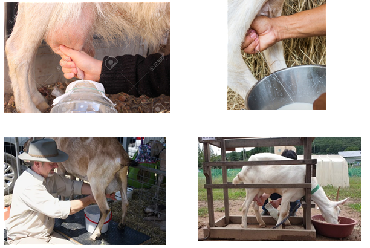

ពពែជាទូទៅអនុវត្តការបំបៅតាមធម្មជាតិ ដូច្នេះបញ្ហាដែលទាក់ទងនឹងការមិនផ្តល់អាហារដល់ colostrum គឺកម្រណាស់។ ទោះជាយ៉ាងណាក៏ដោយ វា ចាំបាច់ណាស់ ដែលទារកទើបនឹងកើតទទួលបាន colostrum យ៉ាងហោចណាស់មួយសប្តាហ៍ដំបូង បន្ទាប់ពីកំណើត។
Colostrum គឺជាទឹកដោះគោដំបូងដែលបញ្ចេញភ្លាមៗបន្ទាប់ពីកំណើត។ វាសម្បូរទៅដោយសារធាតុចិញ្ចឹម ដែលមានផ្ទុក វីតាមីន A ច្រើនជាងទឹកដោះគោធម្មតាពី 10 ទៅ 100 ដង និងសំបូរទៅដោយ អង្គបដិប្រាណនៃប្រព័ន្ធភាពស៊ាំ ។ វាក៏ជួយជំរុញការបណ្តេញ meconium (លាមកដំបូង) ផងដែរ។
ទារកទើបនឹង កើតមិនកើតមកមានអង្គបដិប្រាណរបស់មាតាទេ ដូច្នេះពួកគេត្រូវតែស្រូបអង្គបដិប្រាណទាំងនេះ តាមរយៈទឹកប្រមាត់ ដើម្បីបង្កើតភាពស៊ាំប្រឆាំងនឹងជំងឺផ្សេងៗ។
ទោះជាយ៉ាងណាក៏ដោយ ដោយសារកំហាប់អង្គបដិប្រាណ ថយចុះយ៉ាងឆាប់រហ័ស ក្រោយពេលកើត វាជាការល្អបំផុតក្នុងការចិញ្ចឹម colostrum ក្នុងរយៈពេលមួយម៉ោងដំបូង ។
ប្រសិនបើពពែម្តាយស្លាប់កំឡុងពេលសម្រាល ឬមិនអាចចិញ្ចឹម colostrum សម្រាប់ហេតុផលផ្សេងទៀតនោះ colostrum ពី កូនពពែដែលទើបនឹងកើតថ្មីមួយទៀត អាចត្រូវបានប្រើ។ ប្រសិនបើមិនមានទេ ការជំនួសកូឡូស្ត្រូម អាចត្រូវបានធ្វើដោយការលាយៈ - ទឹកដោះគោ 500 មីលីលីត្រ
- ប្រេងឆា កន្លះស្លាបព្រាបាយ
- ស៊ុតពណ៌ស ១ គ្រាប់
ចិញ្ចឹម 20-30 មីលីលីត្រក្នុងមួយដូស 3 ដងក្នុងមួយថ្ងៃរយៈពេល 3-4 ថ្ងៃ ជាការជំនួស។
ពពែចាប់ផ្តើមផលិតទឹកដោះភ្លាមៗបន្ទាប់ពីសម្រាល។ ទោះជាយ៉ាងណាក៏ដោយ ក្នុងអំឡុងពេល 1-2 សប្តាហ៍ដំបូង អ្នក មិនគួរបំបៅកូនពពែទេ ព្រោះ ត្រូវការទឹកដោះសម្រាប់កូន ។
បន្ទាប់ពី 2 សប្តាហ៍ពពែអាចត្រូវបានទឹកដោះគោ ពីរដងក្នុងមួយថ្ងៃ (ពេលព្រឹកនិងពេលល្ងាច) ក្នុងរយៈពេល ប្រហែល 9-10 ខែ។ វាត្រូវបានណែនាំថា ពពែទាំងអស់ត្រូវបញ្ចប់រយៈពេលបំបៅកូនរបស់ពួកគេ យ៉ាងហោចណាស់ 2 ខែមុនពេលមានកូនបន្ទាប់ ។
ពពែអាចត្រូវបានទឹកដោះគោ ដោយដៃ ឬប្រើម៉ាស៊ីនទឹកដោះគោ (តម្លៃប្រហែល ២០០ ទៅ ៧០០ ដុល្លារ )។ ក្នុងករណីទាំងពីរនេះ អនាម័យមានសារៈសំខាន់ណាស់ ៖
កសិករដែលគ្មានបទពិសោធន៍អាចសង្កត់ធ្ងន់ទៅលើពពែដើម្បីពន្លឿនការបំបៅទឹកដោះ ប៉ុន្តែវាជាការប្រសើរក្នុងការធ្វើឱ្យពពែស្ងប់ស្ងាត់ដោយផ្តល់ ចំណីដ៏ឈ្ងុយឆ្ងាញ់ ។
ក្រោយពេលបៅទឹកដោះគោ៖ - សម្អាតក្បាលសុដន់ម្តងទៀតដោយប្រើ ទឹក និងសាប៊ូ ឬ ទឹកអនាម័យពិសេស ។ - វាជារឿងធម្មតាទេក្នុងការជ្រលក់ទឹកដោះក្នុង ដំណោះស្រាយប្រឆាំងនឹងបាក់តេរី ប៉ុន្តែ ទឹកឆ្អិន ក៏មានប្រសិទ្ធភាពសម្រាប់អនាម័យផងដែរ។

នៅពេលប្រើ ម៉ាស៊ីនទឹកដោះគោ វាចាំបាច់ណាស់ក្នុង ការសម្អាតគ្រប់ផ្នែកទាំងអស់នៃគ្រឿងបរិក្ខារឱ្យបានហ្មត់ចត់ ជាមួយនឹងភ្នាក់ងារសម្អាតដែលសមស្រប មុន និងក្រោយពេលបំបៅ ។
ម៉ាស៊ីនទឹកដោះគោចល័តភាគច្រើនមាន៖ - ក្រញ៉ាំទឹកដោះគោ - ម៉ាស៊ីនបូមទឹក - ធុងទឹកដោះគោ ឬធុង
សូម្បីតែពេលប្រើម៉ាស៊ីនក៏ដោយ ក៏ចាំបាច់ត្រូវ ចាប់ផ្តើម និងបញ្ចប់ការបំបៅទឹកដោះដោយដៃ ដោយហេតុផលមួយចំនួន៖ - ដើម្បី ពិនិត្យមើលស្ថានភាពនៃទឹកដោះ ជាពិសេសរក មើលដាននៃឈាម ។ - ដើម្បីធានាបាននូវការភ្ញោចត្រឹមត្រូវ និងការបញ្ចេញពងអូវុលពេញលេញ។
នៅពេលដែលម៉ាស៊ីនត្រូវបានបើក ទឹកដោះគោត្រូវបានទាញតាមរយៈ ក្រញ៉ាំក្រោមសម្ពាធបូមធូលី បន្ទាប់មកហូរតាម បំពង់ ហើយចុងក្រោយចូលទៅក្នុង ធុងប្រមូល ។
បនា្ទាប់ពីបញ្ចោញទឹកដោះគោ៖ - ដោះឧបករណ៍ដោយប្រុងប្រយ័ត្ន។ - លាងសម្អាតក្បាលសុដន់ ដោយ ទឹកថ្នាំសម្លាប់មេរោគ ដូចដែលអ្នកធ្វើក្នុងអំឡុងពេលបំបៅដោះ។
⚠️ ចំណាំ៖
ពពែច្រើនតែ ខ្សោះជាតិទឹក បន្ទាប់ពីបៅទឹកដោះគោ។ ដូច្នេះវាមានសារៈសំខាន់ណាស់ក្នុងការផ្តល់ ទឹកសាប និងស្មៅ ភ្លាមៗបន្ទាប់ពីទឹកដោះគោ។
ជាធម្មតា ទឹកដោះគោគួរ រក្សាទុកក្នុងទូទឹកកក ភ្លាមៗ បន្ទាប់ពីបៅទឹកដោះគោ។ ម៉្យាងទៀត វាអាចត្រូវបាន បិទភ្ជាប់នៅសីតុណ្ហភាពទាប ហើយបន្ទាប់មកត្រជាក់ សម្រាប់ការរក្សាទុក និងប្រើប្រាស់ប្រកបដោយសុវត្ថិភាព។